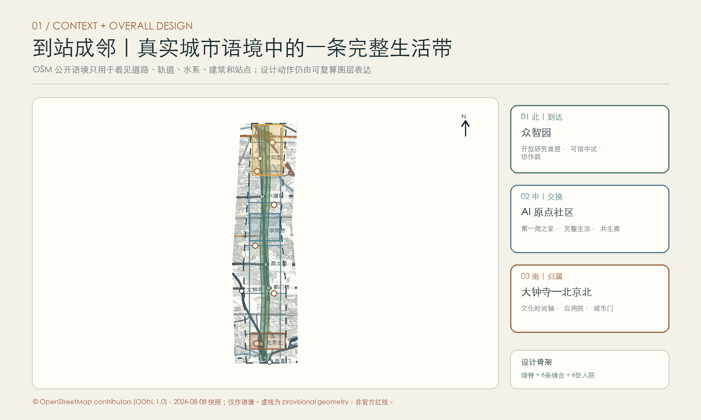
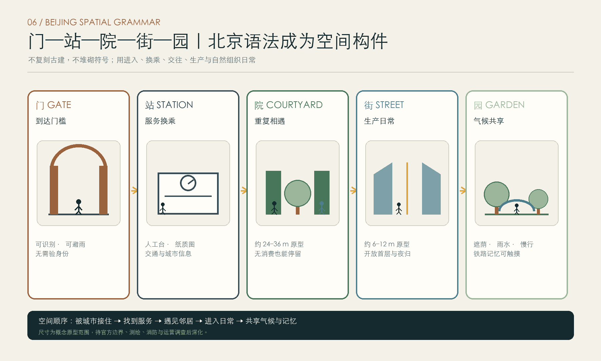
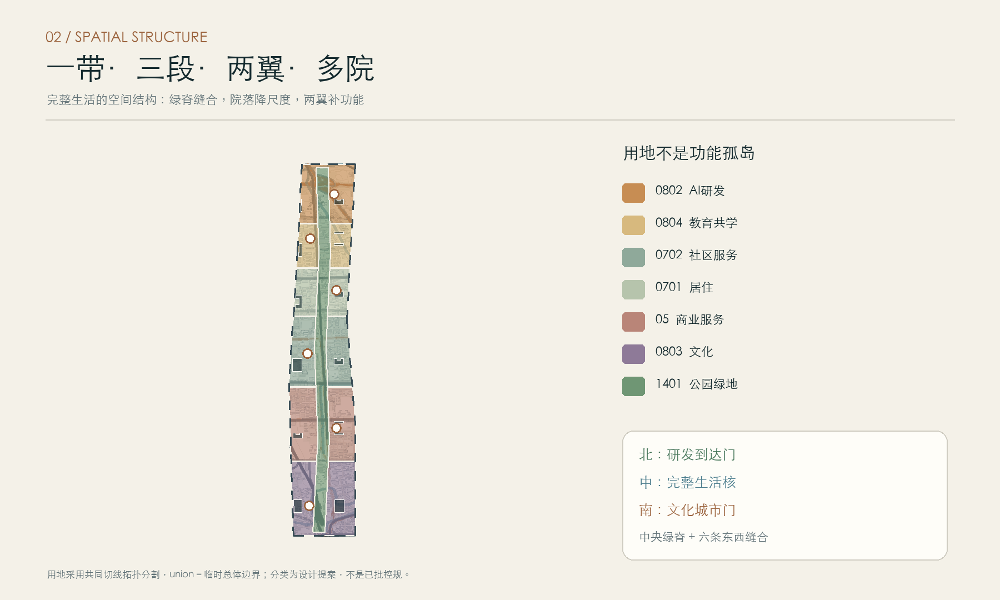
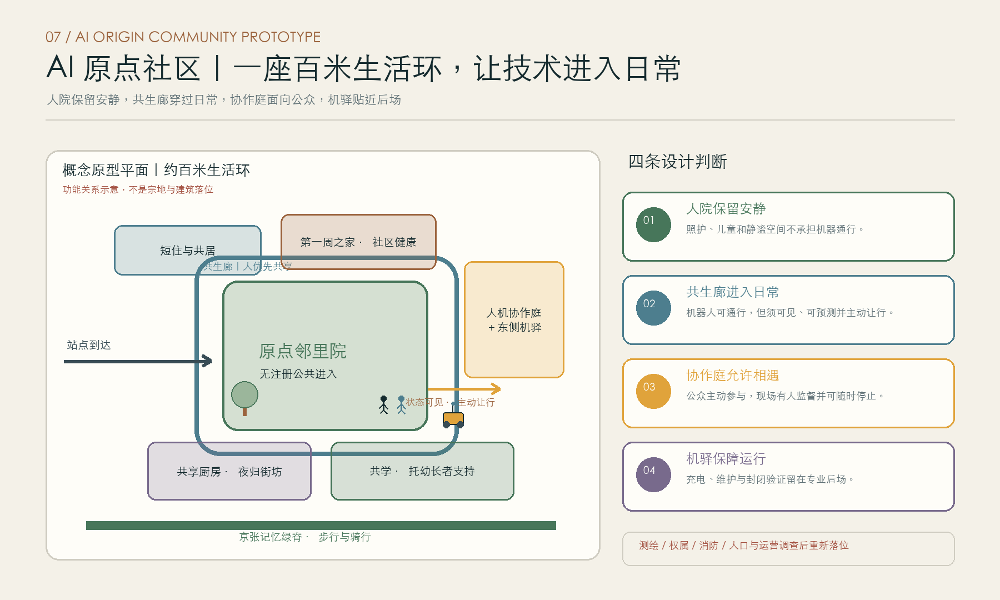
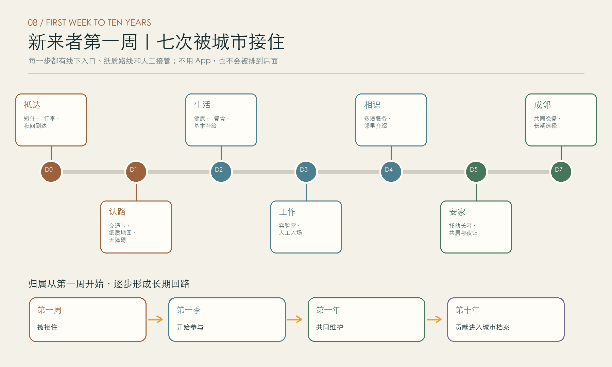
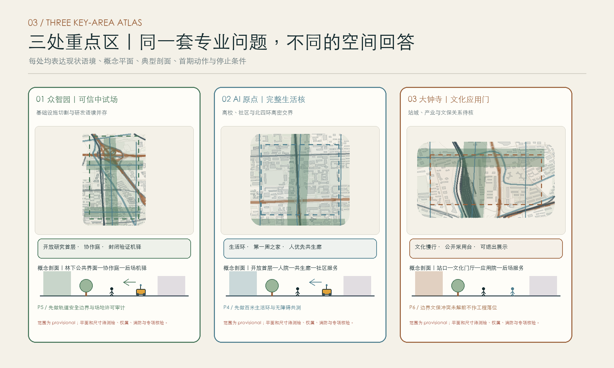
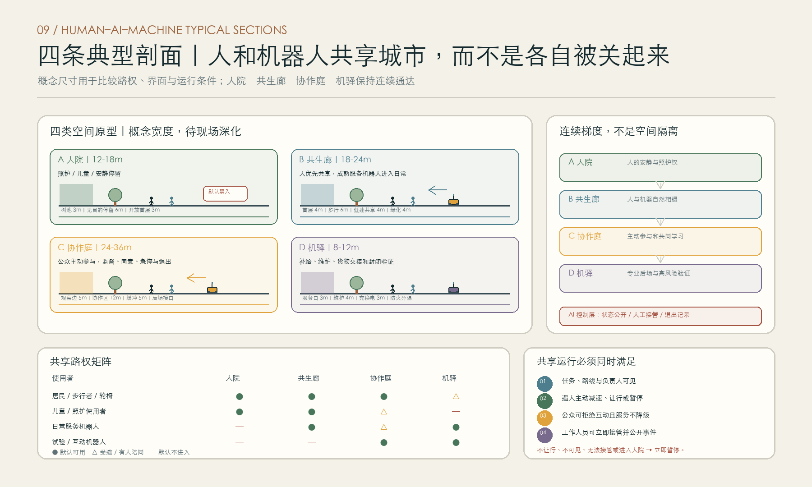
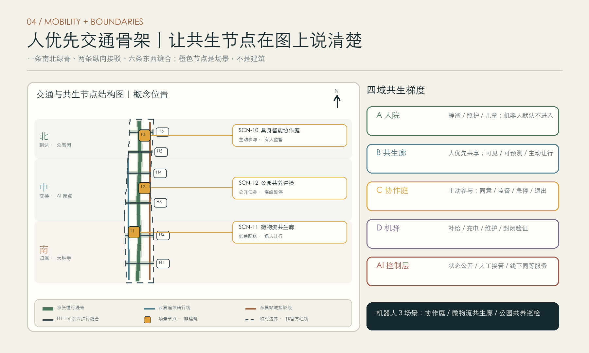
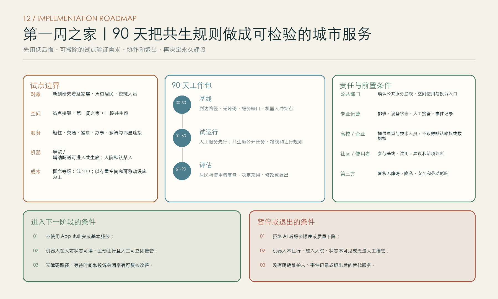
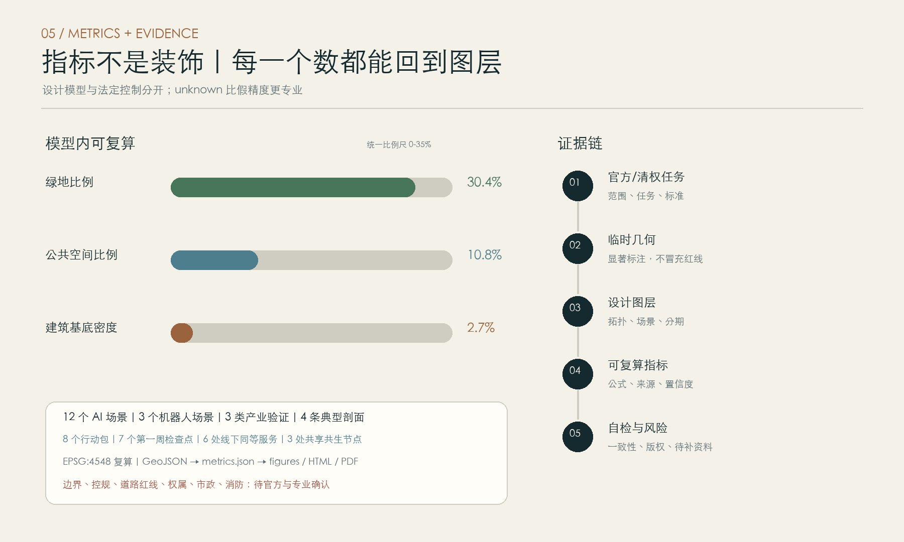

到站成邻 ARRIVE, BELONG：百年京张 AI 完整生活带
以百年京张的到达记忆为骨架，把北部研发门户、中部完整社区、南部文化城市门编织成一条让人才从到站到归属的日常生活带；形成‘人有院、机有驿、共生有廊、AI 有约’的空间秩序。
到站成邻 ARRIVE, BELONG
> 征集传播语：**下一站，留下来 / NEXT STOP: STAY** > 空间伦理：**人有院、机有驿、共生有廊、AI 有约。**
English Abstract
ARRIVE, BELONG turns the century-old Jing-Zhang railway corridor from a line of passage into a civic structure of belonging. A north-to-south sequence—arrival, exchange, and everyday life—links the AI acceleration area, the AI Origin community, and the Dazhongsi cluster through a continuous park spine and a network of small courtyards. Beijing’s spatial grammar of gate, station, courtyard, street, and garden becomes five repeatable spatial components. Human sanctuaries protect quiet and care; shared commons let people and service robots meet under human-priority rules; collaboration courts support invited, supervised interaction; machine stations hold charging, maintenance, and closed testing. Robots appear in three scenarios that test collaboration, shared logistics, and park care. Every first-week checkpoint has an offline route, human review, and an explicit opt-out. The aim is a complete district where researchers, residents, families, students, service workers, and useful machines can share city life without confusing convenience with control.
设计依据与资料清单
公开资料给出了三层范围的文字四至、约面积和三处重点区任务，但没有带可验证坐标系的官方 polygon。因而 site_boundary 与 key_areas 只采用仓库维护者的临时粗略范围，属性保持 official_boundary=false、geometry_role=provisional_constraint。它们支持概念生成、展示和自检，不支持官方红线、权属、道路红线或精确面积结论；正式附件到位后，九个图层、全部指标、十张图、两套 PDF 和离线 HTML 必须整体重算。[source:OFFICIAL-ANNOUNCEMENT] [source:BOUNDARY-SOURCE] [source:KEY-AREA-SOURCE] [data:geometry/site_boundary.geojson#SITE-001] [data:geometry/key_areas.geojson#PROV-KEY-001] [depth:existing_conditions_diagnosis]
任务依据来自仓库 site package、清权任务书和来源登记表；处理后的 fact pack 只作导航，不增加权威性。[source:SITE-PACKAGE] [source:SOURCE-REGISTRY] [source:PROCESSED-FACT-PACK] [source:AGENT-TASKBOOK] 专业语言分别对齐项目公告、智能体任务书、城市设计管理办法、控制性详细规划编制审批边界和国土空间用地分类指南；建筑工程设计深度资料仅作为待补参考，不据此宣称施工图深度。[standard:PROJECT-OFFICIAL-ANNOUNCEMENT] [standard:PROJECT-AGENT-OPEN-CALL-TASKBOOK] [standard:MOHURD-URBAN-DESIGN-MEASURES] [standard:MOHURD-CONTROL-DETAILED-PLANNING] [standard:MNR-LAND-USE-CLASSIFICATION-GUIDE] [standard:MOHURD-ARCH-DESIGN-DEPTH-2016]
北京人文背景仅用于形成叙事和空间判断：京张遗址公园的铁路遗存与绿道缝合、五道口道口地名、大钟寺古钟文化、中关村电子一条街、学院路八大学院、小月河公共空间、清河站新旧转换、西直门城市门和五道口国际青年共同构成“门—站—院—街—园”的地方语法；它们不替代现状测绘或文保控制线。[source:BJ-GARDENS-JINGZHANG] [source:BJ-WUDAOKOU-CROSSING] [source:BJ-DAZHONGSI-MUSEUM] [source:BJ-ZHONGGUANCUN-HISTORY] [source:HD-EIGHT-COLLEGES] [source:BJ-XIAOYUEHE-COLLEGE-ROAD] [source:BJ-QINGHE-STATION] [source:BJ-XIZHIMEN-HISTORY] [source:HD-WUDAOKOU-INTERNATIONAL]
指标全部落在 metrics.json：已知项是临时边界、设计模型或明确的方案计数，未知项说明缺口。核心证据包括 [metric:site_area_sqm] [metric:green_space_area_sqm] [metric:green_ratio] [metric:public_space_area_sqm] [metric:public_space_ratio] [metric:building_footprint_area_sqm] [metric:building_density] [metric:total_floor_area_sqm] [metric:floor_area_ratio] [metric:road_centerline_length_m] [metric:phase_1_area_sqm] [metric:phase_2_area_sqm] [metric:phase_3_area_sqm] [metric:key_area_count] [metric:key_area_announced_total_sqm] [metric:ai_scenario_count] [metric:robot_scenario_count] [metric:human_priority_courtyard_count] [metric:offline_equivalent_service_point_count] [metric:machine_station_count] [metric:shared_human_robot_zone_count] [metric:spatial_permission_domain_count] [metric:first_week_checkpoint_count] [metric:pilgrimage_landmark_count] [metric:land_use_05_area_sqm] [metric:land_use_0701_area_sqm] [metric:land_use_0702_area_sqm] [metric:land_use_0802_area_sqm] [metric:land_use_0803_area_sqm] [metric:land_use_0804_area_sqm] [metric:land_use_1401_area_sqm]。法定容积率与道路面积保持未知，不伪造审定值。

北京空间语法：五个词变成五种构件
“门—站—院—街—园”不作为仿古装饰，而作为从到达到归属的五步空间结构。门提供可识别、可避雨、无需核验身份的到达门槛；站把换乘、纸质导览和人工服务放在同一界面；院以适合停留和反复见面的尺度承载照护、吃饭与邻里活动；街把研发、工坊、社区商业和夜归照明组织成连续首层；园以京张绿脊连接遮荫、雨水、慢行和铁路记忆。图中尺寸为概念原型范围，只服务下一步比较和深化，不是审批控制值。[depth:overall_spatial_structure] [depth:blue_green_public_space]

三层范围工作框架
三层范围各处理一种尺度。统筹研究范围约 43.6 平方公里，讨论中关村科学城、学院群、产业链和城市生活之间的长期协同；总体设计范围约 11.4 平方公里，建立“北到达—中交换—南归属”的完整生活骨架；三处重点区公告合计约 368.4 公顷，分别形成可进入下一步专业深化的项目组合。所有数字以公告口径表达为“约”，几何复算值只用于模型一致性。[source:OFFICIAL-ANNOUNCEMENT] [metric:key_area_announced_total_sqm] [depth:three_level_scope_framework]
空间结构概括为“一带、三段、两翼、多院”。一带是京张记忆公园和连续慢行绿脊；三段是北部众智园的研发到达段、中部 AI 原点的交往生活段、南部大钟寺—西直门的文化城市门段；两翼是学院科研协同翼与生活服务更新翼；多院则把大尺度创新区切回到北京可识别的日常尺度。用地分区以共同切线从临时边界拓扑分割，保证无缝覆盖而不把矩形临时边界当作设计主角。[data:geometry/land_use.geojson#LU-001] [depth:overall_spatial_structure] [depth:land_use_layout]
北端是外来人才判断是否愿意留下的第一站；中段把照护、吃饭、夜归和学习组织成可预期的日常；南端把大钟寺的时间感、西直门的城市门和中关村创业史带回公共生活。小院保留安静，共生廊容纳人与服务机器人日常相遇，协作庭用于公开体验和共同学习，充电、维护与封闭验证留在机驿。
官方 polygon 到位后，替换顺序为：先替换三层边界与重点区，再重新拓扑分区、裁切建筑和公共空间，随后复算面积、比例和分期，最后重绘图纸与网页。当前成果可评审设计内容，但不能进入法定审批或工程实施。[depth:metrics_recalculation] [depth:risk_missing_data]

统筹研究范围产业与未来城市研究
“到站成邻”以转化回路组织世界级 AI 生态：大学与研究机构产生知识，开放实验室形成原型，众智园完成受控测试与中试，AI 原点社区提供首批真实用户与公共服务反馈，大钟寺片区连接资本、文化传播和城市市场，沿京张绿脊再把经验公开回开发者社区。三区两翼由人才、知识、资本、场景和日常服务五种流动连接。[standard:PROJECT-AGENT-OPEN-CALL-TASKBOOK] [depth:overall_spatial_structure]
总体品牌标识由三笔构成：外框是北京“门”，中心圆点是铁路“站”，内嵌方形是胡同“院”；一条开放线穿过三者，代表开源与可进入。主色为钟铜棕、铁路灰、园林绿和电子琥珀。标识不使用既有企业 Logo、人物肖像或未经许可字库，只采用本方案自绘几何与系统字体。传播语“下一站，留下来”用来追问城区品质：一个人下车以后，是否愿意把生活也放在这里。它不构成招商承诺。
五个国际案例提供机制参照。新加坡 one-north 把研究机构、企业、生活和绿地放入步行可达的多片区网络；其 LaunchPad 说明小企业需要可变空间、共同服务和真实试验条件。[source:CASE-JTC-ONE-NORTH] 巴黎 STATION F 用 SHARE、CREATE、CHILL 的开放梯度连接创业与城市日常。[source:CASE-STATION-F] 剑桥 Kendall Square 说明产业增长要同步补住房、餐饮、街道和社区接口。[source:CASE-CAMBRIDGE-KENDALL] 巴塞罗那 22@ 在保留旧城脉络的同时推进技术转移、公共空间和社区收益。[source:CASE-BARCELONA-22] one-north living lab 提供受控测试机制；本方案据此增加共生廊和协作庭，让成熟机器人进入日常共享与公众协作，尚未成熟的设备仍留在机驿和封闭验证区。
可转化的共同经验只有四条：服务集中但城市开放、空间可变但规则清楚、试验真实但风险受控、产业强度高但生活不可缺席。不能照搬的是超大单体、封闭园区和只为展示的科技装置。这里更适合以小院和街巷建立弱连接，让国际人才、北京居民和学生在重复相遇中形成信任。[metric:human_priority_courtyard_count]
总体设计范围城市更新与控规深度城市设计
总体设计采用“公共骨架先行、存量适配优先、增量集中补缺”的框架。绿脊与六条东西缝合廊道先解决铁路两侧联系；六处院落节点承载第一周服务、邻里照护、共学、开源展示和夜间生活；新增建筑只作为概念基底，优先填补短住、社区服务、共享实验室和文化交流，不以地标塔楼作为起点。[data:geometry/green_space.geojson#GREEN-001] [data:geometry/public_space.geojson#PUBLIC-001] [data:geometry/buildings.geojson#BLDG-001] [standard:MOHURD-URBAN-DESIGN-MEASURES]
城市更新对象分为四类。保留：经调查确认有价值的铁路工业遗存、成熟社区生活网络与可继续使用的建筑；改造：把封闭首层、低效园区配套和闲置厂房改为共享服务、实验与社区空间；拆除：仅在结构安全、公共连通或重大基础设施问题经专业论证后提出；新建：集中补足人才短住、社区照护、开放实验和站城接口。当前 renewal_action 是方向性标签，缺少建筑普查、权属和结构鉴定，不能据此实施拆迁。[depth:retain_renovate_demolish]
开发强度采用“模型值与法定值分开”原则。建筑基底、概念层数、总建筑面积和模型容积率可从图层复算，但全部标注低置信度；官方容积率、高度、密度、绿地率、退界和公共服务设施配建条件保持待确认。[metric:total_floor_area_sqm] [metric:floor_area_ratio] [metric:building_density] [depth:development_intensity_controls] 建筑高度建议形成绿脊两侧较低、外缘适度集约、门户节点有节制起伏的轮廓；这只是风貌控制方向，不是高度审批值。[depth:height_massing_character]
产业空间按“研发—测试—服务—传播”组织，但生活服务比例不作为产业的附属剩余。原点社区的住宅、社区服务、教育和商业与研发空间同时进入用地结构；夜间餐饮、托幼长者支持、运动、文化和线下政务服务共同决定人才是否真正留下。用地代码依据国家分类指南作结构化表达，不宣称已获用地批准。[standard:MNR-LAND-USE-CLASSIFICATION-GUIDE]
重点区域详细设计
三处重点区均沿用仓库临时粗略 polygon，矩形边只承担索引和面积校核，不表达地块、道路或权属边界。[data:geometry/key_areas.geojson#PROV-KEY-002] [source:KEY-AREA-SOURCE] 因而本节的建筑位置、项目清单和连接方向属于设计命题，待官方图与现场调查到位后再落位。[depth:three_key_area_detailed_design]
众智园 AI 自主创新加速区：北部开源到达门户
定位是“从研究原型到可信中试”的北部门户。空间由众智开源院、共享算力与实验服务楼、具身智能协作庭、封闭验证机驿和清河方向的步行接驳组成。协作庭允许公众在知情、有人监督的条件下参与教学、共同任务和低风险体验；不满足可见状态、主动让行、人工接管和退出要求的设备只能留在后场封闭验证。保留与更新优先识别可适配厂房或科研建筑，新建量集中在公共实验和短周期团队空间。实施风险是官方边界、现状产业、环评、消防和试验安全条件缺失。
北京 AI 原点社区：中部完整生活与交换核心
定位是“创新者与居民共同生活的第一公里”。概念原型以约百米生活环为组织尺度：中央原点邻里院保持无注册公共进入，北侧衔接第一周之家与社区卫生，西侧连接短住与共居，南侧布置共享厨房、夜归街坊与共学空间，东侧机驿贴近后场服务路。这里表达功能关系和权限梯度，不表达真实宗地或建筑落位。
从站点到住所的七个第一周检查点依次处理：抵达与短住、交通与纸质地图、社区健康与生活补给、工作与实验室入场、多语与邻里认识、家庭照护、共同晚餐与长期选择。七项均保留人工窗口和纸质路线，不以安装 App、接受画像或使用人脸识别作为服务前提。[metric:first_week_checkpoint_count] [metric:offline_equivalent_service_point_count]
建筑更新强调首层开放、院落尺度和夜间照明，减少封闭大堂与园区门禁。物流机器人从机驿进入共生廊，可在公开任务、路线和状态的前提下完成低速配送与人工交接；遇到儿童、长者、轮椅使用者或拥挤人流时应减速、让行或暂停。照护院、儿童活动和静谧空间仍是机器人默认禁入区。风险在于真实人口结构、服务缺口和产权条件尚未调查，百米生活环与建筑原型需在测绘、消防、权属和运营调查后重排。


大钟寺 AI 产业聚集区：南部文化城市门
定位是“北京时间、铁路到达与创业传播的城市客厅”。门前钟院不复制古建，而以钟的节律、铜色材料和可听见但可控的公共声音艺术表达时间；大钟寺开源工坊连接企业路演、公众展览、开发者档案和北京电影学院等创意资源。西直门方向的城市门强调公交换乘、步行连续和文化导览，而非新增巨型门楼。文保范围、建设控制地带和视线要求未取得，任何靠近文物的建设都必须以后续文保意见为准。[source:BJ-DAZHONGSI-MUSEUM]

AI 创新生态、人才画像与 AI+ 场景
六类画像共同决定场景：初到北京的国际研究员需要多语、住房和行政导航；本地老居民需要不被数字化排除的社区服务；青年创业者需要实验、法务、融资和试验入口；带儿童或照护长者的家庭需要时间可预测的支持；夜班服务人员需要安全夜归和公平的服务资格；行动、视听或认知障碍使用者需要真正可达的路线与人工帮助。画像不用来给人打分，只检查空间和服务是否遗漏边缘处境。[standard:PROJECT-AGENT-OPEN-CALL-TASKBOOK]
所有场景遵守四条底线：最小必要数据，默认不做人脸识别和跨场景画像；关键决定有人复核，使用者可申诉；同一公共服务必须有线下入口；系统故障时空间仍能工作。机器人只占十二个场景中的三个，其余九个是面向人的信息、协同和公共服务。[metric:ai_scenario_count] [metric:robot_scenario_count] [data:geometry/constraints.geojson#SCN-01]
人院—共生廊—协作庭—机驿：四域共生梯度
人院、共生廊、协作庭和机驿连成一条从安静日常到专业后场的使用梯度，域与域之间保持通达，不各自封闭。人院服务照护、儿童、静谧与无目的停留，机器人默认不进入；共生廊允许成熟的服务机器人与行人共享，路权始终以人为先；协作庭用于公众主动参与的教学、共同任务和低风险体验，必须有人监督并取得明确同意；机驿承担充电、维护、货物整理和封闭验证。[metric:machine_station_count] [metric:shared_human_robot_zone_count] [metric:spatial_permission_domain_count] [data:geometry/constraints.geojson#ZONE-004] [data:geometry/constraints.geojson#ZONE-007]
AI 界面贯穿四域，负责状态公开、人工接管和退出记录。机器人在共享空间必须公开任务、路线、状态与人工负责人；遇人主动让行，使用者可以拒绝互动，工作人员可以立即接管。断电后，门仍可进、院仍可坐、街仍可走，纸质导视和人工窗口仍能完成基本公共服务。

场景卡 01｜第一周到达助手
对象为新入驻人才与家属；位置在第一周之家和站点接驳处；输入仅含本人主动提供的事项清单；输出是住房、交通、医疗、教育、办事和社区活动路线。敏感材料不跨事项复用，线下服务员可完整替代，运营由综合服务台与多语志愿网络共同承担。
场景卡 02｜多语社区导航
对象为国际青年、访客和听障使用者；位置在五道口语言院和沿线导视；数据以现场问答和公开信息为主，字幕、手语预约和纸质地图并行。系统只推荐选择，不决定资格，错误翻译可一键转人工。
场景卡 03｜夜归安全互助
对象为夜班人员、学生与独行者；位置在东翼接驳线和夜归街坊；提供照明报修、同行呼叫、有人值守的安心点和末班接驳提示。不做持续人脸追踪，不建立“可疑人员”名单，紧急响应由人负责。
场景卡 04｜儿童长者照护协同
对象为家庭照护者；位置在原点邻里院；只在授权范围内协调接送、预约、临时托管和社区互助。系统不得独立作医疗、教育或监护决定，照护院是机器人常态禁入区，所有异常由持证人员处置。
场景卡 05｜无障碍路线审计
对象为行动、视听与认知障碍者；位置覆盖六条东西缝合廊道；使用匿名障碍上报、坡度与设施巡查信息形成维修优先级。评分只评空间问题，不评人；最终项目排序由残障代表、居民和专业人员共同确认。
场景卡 06｜开放实验室预约
对象为研究团队、学生和中小企业；位置在八学院共学楼和众智开放实验室；系统协调仪器、培训、保险、知识产权和安全门槛。模型不直接批准高风险实验，实验负责人和场地管理员拥有最终决定权。
场景卡 07｜社区议题共创
对象为居民、企业与园区运营者；位置在开源会客院；AI 只负责归类意见、展示分歧和追踪回应，不把少数意见压缩成“共识”。原始发言可匿名，重大空间调整必须通过公开会议和正式程序。
场景卡 08｜线下同等服务镜像
对象为不使用智能手机、网络不稳定或拒绝数据授权的人；位置在每一处人院的服务台；线上事项同步生成纸质和人工流程。拒绝 AI 不降低服务顺序与质量，这是完整生活带的公平基础。
场景卡 09｜京张地名叙事
对象为居民、学生和访客；位置沿记忆绿脊；以经核验的铁路道口名、清河站、大钟寺和中关村创业史形成分层导览。史料与推测明确区分，公众可提交更正，数字叙事不替代实体标牌和现场讲述。
场景卡 10｜具身智能协作庭（机器人 1/3，测试验证）
对象为研发团队、安全评审者、学生、居民和受邀观察者；位置在众智园协作庭与后场验证机驿。机器人先在封闭区完成基础安全验证，再进入协作庭开展共同搭建、园艺、修理或教学任务。公众主动加入，现场安全员持续在场；设备必须公开能力边界、任务和急停方式，任何人都可以退出互动。
场景卡 11｜微物流共生廊（机器人 2/3，测试验证）
对象为商户、居民和配送人员；机器人从片区边缘机驿进入人优先共生廊，在公开任务、路线和状态的条件下完成低速配送。遇到儿童、长者、轮椅使用者、骑行者或拥挤人流时主动减速、让行或暂停，交接仍可由人工完成。包裹信息最小化保存，丢失和误投由运营主体承担，人可选择传统配送。
场景卡 12｜公园共养巡检（机器人 3/3，测试验证）
对象为养护团队、志愿者和日常游园者；位置在公园共生廊。机器人与养护人员一起识别植被、路面和设施问题，不开展治安识别；公众可以看见任务、提交更正或请求让行。高峰、儿童聚会和大型活动期间由运营者降低任务强度或暂停，发现的问题必须由人工复核后派单。[depth:municipal_new_infrastructure]
用地、建筑规模与拆改留方案
用地分区采用概念设计的完整拓扑，尚不具备已批控规效力。科研与教育集中在北部和学院协同段，社区服务与居住落在中部，文化与商业服务加强南部城市门，公园绿地贯穿全带；各类面积从同一边界分割复算，避免独立画块造成重叠或缺口。[data:geometry/land_use.geojson#LU-007] [metric:land_use_1401_area_sqm] [depth:land_use_layout]
建筑采用“小体量成院、首层可进入、后场可服务”的原型。十二组概念基底分别对应文化、混合服务、孵化、办公、社区服务、人才公寓、居住、商业、教育、实验室和研发；中央留院，面向绿脊形成可停留界面。模型楼层只用于检验规模关系，不是高度或容积率审批条件。[data:geometry/buildings.geojson#BLDG-006] [metric:building_footprint_area_sqm] [depth:height_massing_character]
拆改留策略坚持“先调查、再分类、最后决定”。可能的工业遗存、成熟小店和社区网络优先保留；大进深厂房、封闭首层和闲置配套优先改造；拆除仅作为经结构、公共利益与碳排比较后的最后选项；新建专门补短板，不追求一次性推倒重来。缺现状建筑档案与权属资料，所有 feature 的 renewal_action 均需现场复核。[depth:retain_renovate_demolish]
建筑风貌不仿古，也不做泛科技蓝光。材料建议来自铁路灰、钟铜棕、园林绿与电子琥珀；屋顶与天际线尊重既有城市背景，沿绿脊控制压迫感，重要交叉口以首层公共性而非高度争夺识别度。涉及大钟寺周边的视线、声环境和材料必须服从文保专业意见。
交通、轨道、市政与公共服务设施
交通策略以“到站后一公里”而非汽车通过效率为起点。中央绿道承担连续步行，西翼骑行线连接学院与社区，东翼接驳线连接轨道和公共服务，六条东西通道缝合铁路两侧；所有线位均为概念中心线，不是道路红线。[data:geometry/roads.geojson#ROAD-001] [metric:road_centerline_length_m] [depth:traffic_rail_slow_parking]
站点周边设置遮雨等候、清晰导视、共享单车秩序区、无障碍连续面和夜间有人值守的安心点。机动车与装卸进入外缘和后场，不穿越人院；机器人物流从机驿进入共生廊，在人流高峰、儿童聚会和大型活动时减速、绕行或暂停。停车采取存量共享和分区定价的深化方向，但泊位数、出入口和交通影响必须依据官方道路、轨道客流和现状调查确定。
市政与新型基础设施采用“看得见服务、看不见侵扰”。端侧算力与设备间进入后场机驿，公共 Wi-Fi 与传感器有可读标识和关闭路径；分布式能源、雨水花园、垃圾分类、充换电与应急电源优先与更新项目一体化。供电、给排水、热力、通信、消防和防洪容量没有官方资料，当前只列需求，不作承载结论。[depth:municipal_new_infrastructure]
公共服务形成“15 分钟完整生活 + 第一周快速安顿”双层网络：常住居民需要稳定的托幼、养老、医疗、文化和运动；新到人才需要短住、行政、语言、社群和实验资源。两者共享空间但不互相挤占，服务资格不以企业级别、手机型号或是否授权 AI 为条件。

蓝绿空间、公共空间与城市风貌
京张记忆公园承担全带最稳定的公共地址。中央绿脊连接清河、小月河和学院路方向的蓝绿资源，六条东西绿廊把被铁路分隔的街区重新缝合；雨水调蓄、遮荫、连续骑行和历史叙事叠加在同一公共骨架上。[source:BJ-GARDENS-JINGZHANG] [source:BJ-XIAOYUEHE-COLLEGE-ROAD] [data:geometry/green_space.geojson#GREEN-004] [metric:green_ratio] [depth:blue_green_public_space]
六处“人院”是公共生活的基本单元：门前钟院、开源会客院、原点邻里院、五道口语言院、八学院共学园和众智开源院。它们允许没有消费目的的停留，并为儿童、长者、残障者和夜班人群预留舒适尺度。人院之外设置共生廊与协作庭：前者让行人与成熟服务机器人自然相遇，后者让公众在监督下主动参与。关闭系统后，院、廊、纸质导视和人工窗口仍然可用。[metric:public_space_ratio] [metric:shared_human_robot_zone_count]
四处朝圣地标均是概念节点。第一周之家记录每位新来者真正需要的城市服务；交叉口共创厅公开展示未解决的问题而非只展示成功；十年年轮院为持续贡献者种树、刻录开源成果和社区记忆；京张开源档案站保存开发者文档、口述史和可复现实验。它们的“朝圣”来自长期贡献，不来自巨构、屏幕和名人雕像。[metric:pilgrimage_landmark_count]
文化叙事沿“门—站—院—街—园”展开：西直门代表进入北京，清河站和京张道口代表到达与迁移，北京院落代表熟人尺度，中关村电子一条街代表从知识到市场，京张公园代表开放共享。大钟寺的钟声给予“时间”，学院路给予“求知”，五道口给予“多语”，共同把 AI 从抽象未来拉回北京日常。[source:BJ-WUDAOKOU-CROSSING] [source:BJ-ZHONGGUANCUN-HISTORY]
更新项目清单、实施政策与分期计划
近期“开门”聚焦低后悔行动：补六条慢行断点，建设第一周之家，选择一段共生廊和一处协作庭进行 90 天试点，完成无障碍审计，并建立边界与数据更新台账。工作分为 30 天基线、30 天试运行和 30 天评估；前提是取得官方边界和基本现状调查，临时设施可撤除，不触碰未经确认的文保和权属条件。[data:geometry/phasing.geojson#PHASE-001] [metric:phase_1_area_sqm] [depth:renewal_project_list]
试点由公共部门确认服务底线和投诉入口，专业机构负责排班、设备状态与人工接管，高校和企业提供原型与技术人员，社区和真实使用者参与基线、试用和结项判断，第三方复核无障碍、隐私、安全与劳动影响。概念成本等级为低至中，以存量空间、可移动设施和短期运营为主；正式投资额、采购和实施主体均待后续核价与审批。

中期“成院”推进原点社区服务、人才短住、八学院共学、开放实验室、夜归街坊和大钟寺开源工坊，以存量改造为主。政策建议包括短租与人才住房的公平准入、共享实验设施责任规则、首层公共空间运营协议、数据影响评估和社区收益回投；这些均为深化建议，不代表政府已采纳。[metric:phase_2_area_sqm]
长期“成邻”完善众智园研发中试、全带绿脊和国际开发者网络，并根据真实使用数据迭代空间。年度运营采用“春开源、夏共学、秋测试、冬归档”：春季发布城市问题和开源任务，夏季由八学院与国际青年共同办公开课，秋季在受控场地做安全验证，冬季公布指标、失败案例和下一年修正清单。每月还有邻里修理日、无障碍走查和新居民晚餐，使活动不只依赖年度大会。[metric:phase_3_area_sqm] [depth:phasing_implementation]
运营主体建议采用公共部门定规则、专业机构管空间、大学与企业供技术、社区委员会监督、第三方做隐私和安全评估的多方结构。招商、资金和活动品牌均须公开透明；如果服务只对头部企业开放，拒绝 AI 后服务降级，或机器人不让行、状态不可见、无法人工接管，应触发整改或退出。
指标体系、面积复算与合规矩阵
核心指标不是越高越好。绿地与公共空间比例检验完整生活是否有真实承载；十二个 AI 场景与三个机器人场景检验技术是否服务人；四类空间许可和共享共生节点检验安全边界之外是否真的发生日常相遇。[data:geometry/public_space.geojson#PUBLIC-007] [metric:green_space_area_sqm] [metric:public_space_area_sqm] [metric:shared_human_robot_zone_count]
面积采用 EPSG:4548 复算。用地由临时总体边界拓扑全覆盖，绿地、公共空间和建筑分别取图层 union，避免重叠重复计数；概念总建筑面积以基底乘概念层数求和。由于边界是 provisional，数值精度只服务模型一致性，正文展示时使用约数；官方 polygon 到位后必须重算，不能仅按比例缩放。[standard:MOHURD-CONTROL-DETAILED-PLANNING] [depth:metrics_recalculation]
合规链由 compliance_matrix.json 对应公告与任务书六项任务，standard_matrix.json 对应专业标准，design_depth_matrix.json 对应十五项设计深度，self_check.json 记录拓扑、图文一致性、版权和 AI 边界。重点深度索引包括 [depth:development_intensity_controls] [depth:traffic_rail_slow_parking] [depth:municipal_new_infrastructure] [depth:blue_green_public_space] [depth:three_key_area_detailed_design] [depth:phasing_implementation]。图层还包括 [data:geometry/constraints.geojson#ZONE-001] 与 [data:geometry/phasing.geojson#PHASE-003]。
当前设计模型的最大限制在于缺少官方几何、控规条件和现状调查。对这些缺口保持 unknown，比给出貌似完整的假精度更专业。评审可评价空间逻辑、场景伦理、文化转译和证据链，但不应把模型值解释为审定指标。

风险、版权与合规说明
空间风险包括临时边界、现状建筑与权属缺失、道路和市政条件未知、文保控制线未取得；技术风险包括数据越界、算法偏差、系统故障、机器人不让行或行为不可预测；社会风险包括数字排斥、创新资源挤占社区服务与夜间扰民。对应缓解手段是整体重算、专业调查、分期可逆、线下同等服务、人工复核、共生廊路权规则和受控试点。[depth:risk_missing_data]
本包的文字、结构化数据、图示、网页和 PDF 由 whatevertogo 与 Codex 协作生成。外部资料只作文本依据，未复制外部图片、地图截图、企业 Logo、人物肖像或受限字体；所有图面使用自绘矢量、提交 GeoJSON 和系统字体。版权声明详见 report/copyright_statement.md。[source:SOURCE-REGISTRY]
方案不声称政府批准、资金落实、招商确定或工程可实施。任何涉及法定规划、文保、消防、环评、交通、市政和安全的结论，必须在取得正式资料后由相应专业人员复核。AI 生成不替代作者责任，提交前由用户审阅后再决定是否进入公开 PR。
“人有院、机有驿、共生有廊、AI 有约”同时是验收条件：若安静与照护空间被设备占据，若共享空间中的机器人不可见、不让行或无法人工接管，若拒绝数据授权导致公共服务降级，则方案未达到设计目标。[standard:PROJECT-OFFICIAL-ANNOUNCEMENT]
参考资料
正式依据见 brief/site-package/、data/source_registry.json、sources.json、standard_matrix.json、design_depth_matrix.json 与 compliance_matrix.json。北京文化与国际案例均按背景用途登记，不承担红线、控规或工程结论。[source:SITE-PACKAGE] [standard:MNR-LAND-USE-CLASSIFICATION-GUIDE]
本方案结构化成果包括九个 GeoJSON、可复算 metrics.json、十张本地图、离线阅读 HTML、十四页 A3 手册和六张专业评审版 A0 展板。最后一项可读数据索引为 [data:geometry/roads.geojson#ROAD-003]；官方资料更新时按假设清单触发全包重算。[depth:existing_conditions_diagnosis]